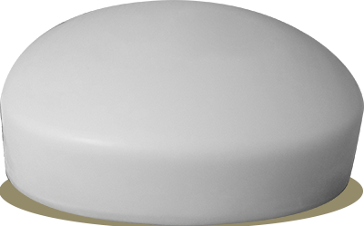
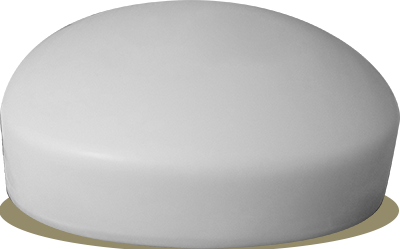

Created in Babylon in 2800 BC. They produced it by combining water, alkali and cassia oil made from leaves, young twigs and unripe cinnamon fragrant fruits. In. Egypt, soaps based on animal and vegetable fats mixed with alkaline salts were used. Legend has it that soap was discovered in ancient Rome. There was Mount Sapo, where the Romans burned, animals as a sacrifice. In the rain, ashes from the hearth and rendered animal fat flowed down the mountain into the Tiber River. In medieval Europe, soap was known and produced, but initially from animal fats. In Naples, at the end of the 6th century, soap makers had a separate guild. On the other hand, in the 8th century, the production of soap, apart from Italy, also spread to Spain, which may be related to the Arab conquest of the Iberian Peninsula.During the period of Charlemagne, one of the chapter houses imposed the obligation of the royal administrators of estates to stockpile stocks of soap.
Way of giving

 

 You dont stink
You dont stink